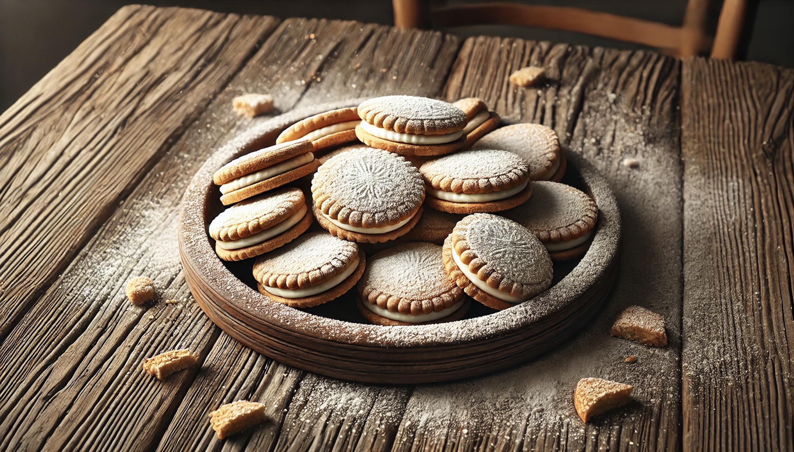

"Food is the ingredient that binds us together." – Anonymous
Alfajores Recipe
Ingredients:
- 2 cups cornstarch
- 1 cup all-purpose flour
- 1/2 cup powdered sugar
- 1/2 teaspoon baking powder
- 3/4 cup unsalted butter (room temperature)
- 2 egg yolks
- 1 teaspoon vanilla extract
- 1 cup dulce de leche (for filling)
- Shredded coconut (optional, for rolling)
Instructions:
- Preheat the oven to 350°F (175°C) and line a baking sheet with parchment paper.
- Mix dry ingredients: In a bowl, sift together the cornstarch, flour, powdered sugar, and baking powder.
- Cream butter: In a separate bowl, beat the butter until creamy, then add the egg yolks and vanilla extract. Mix well.
- Combine: Gradually add the dry ingredients to the butter mixture, mixing until a soft dough forms.
- Shape dough: Roll out the dough on a floured surface to about 1/4 inch thick. Cut out small circles using a cookie cutter or a small glass.
- Bake: Place the cookies on the prepared baking sheet and bake for 10-12 minutes, until the edges are lightly golden. Let them cool.
- Assemble: Spread a layer of dulce de leche on one cookie and sandwich it with another. Roll the edges in shredded coconut if desired.